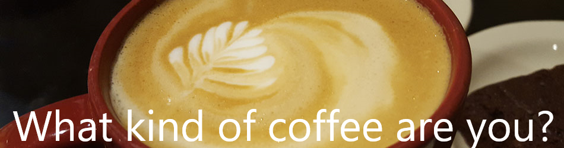

We all have those days when we need a good cup of joe. But when we get to the coffee shop, what do we want? Do you need a strong cup of something dark? Do you need something sweet at add a little something more to your day?
Coffee has its own personality - find out which one you are!
Result: